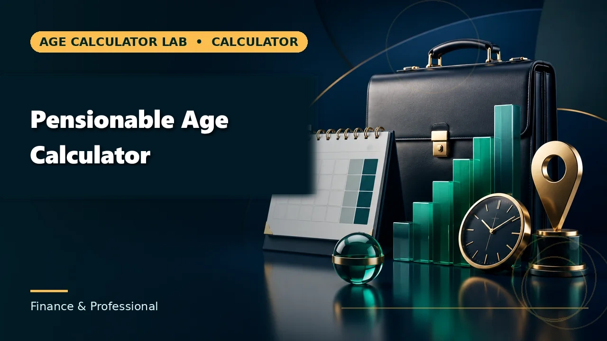
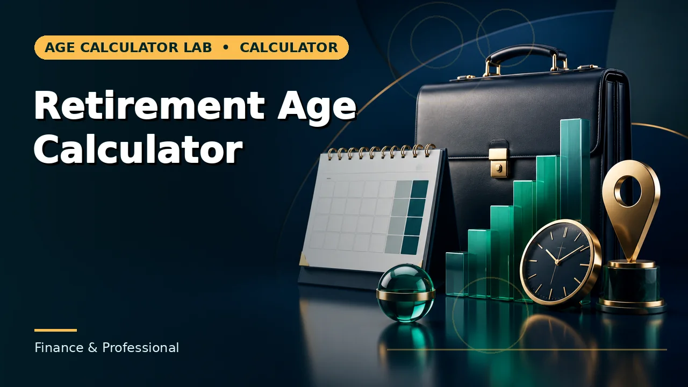
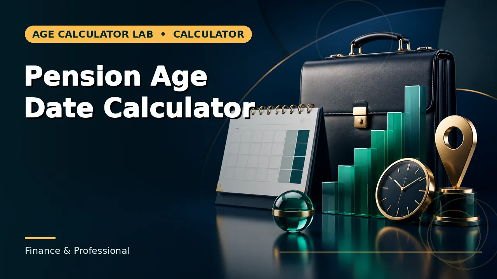
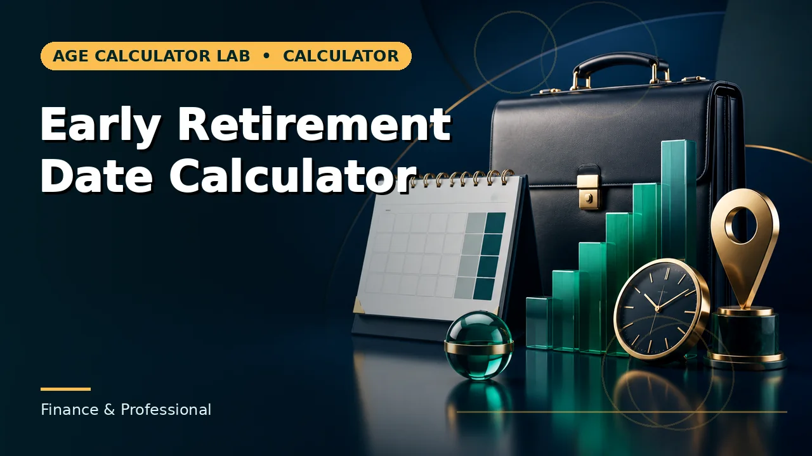

Quick answer
Pensionable age (specifically State Pension age in the UK) is the legal milestone set by Parliament when you become entitled to claim government retirement benefits. Retirement age is a personal or employment decision about when you stop working. You can stop working years before reaching pensionable age using private savings, or continue working full-time after reaching it without losing your benefit entitlement.
What Is Pensionable Age?
In legal and actuarial terms, pensionable age is the threshold defined by a government statute or an occupational pension trust deed at which an individual attains the right to receive pension payments without incurring an early-retirement reduction or penalty.
In the United Kingdom, public conversation almost invariably uses the phrase to refer to State Pension age—the statutory birthday milestone governed by primary Acts of Parliament. However, pensionable age is not a single, universal number for all parts of your financial life:
- Statutory state benefits: Governed by the national State Pension age timetable enacted under the Pensions Acts.
- Occupational pension schemes: Governed by individual scheme rules (such as the NHS Pension Scheme, Teachers' Pensions, or Civil Service Alpha), which establish a scheme-specific "Normal Pension Age" (often aligned with State Pension age for post-2015 accruals).
- Personal and defined-contribution pensions: Governed by the statutory Normal Minimum Pension Age (NMPA), allowing private withdrawals from age 55 (rising to 57 on 6 April 2028).
Calculate your personal date: Look up your exact statutory entitlement day using our interactive Pensionable Age Calculator, which accounts for transitional months and leap-boundary provisions.
What Is State Pension Age in the UK?
State Pension age is the earliest age at which you can legally begin claiming the UK State Pension. It is an objective calendar boundary determined by primary legislation, not by health, employment status, or personal preference.
Historically, the State Pension age was 60 for women and 65 for men. Between April 2010 and November 2018, women's State Pension age was progressively equalised with men's at 65. The age for both sexes then increased to 66 between December 2018 and October 2020.
Under the current legislative framework enacted by Parliament (the Pensions Act 2014 and the Pensions Act 2007), two further statutory transitions are enshrined in law:
UK State Pension Age Legislative Trajectory
Current Enacted LawReached by everyone born between 6 October 1954 and 5 April 1960. Fully implemented across the UK by October 2020.
Phased monthly increases under the Pensions Act 2014 affecting everyone born between 6 April 1960 and 5 March 1961.
Legislated rise under the Pensions Act 2007 for cohorts born from 6 April 1977 onwards. Subject to statutory periodic reviews.
Notice that these changes do not apply universally on a single calendar day; instead, they are apportioned into cohorts based on date of birth.
Pensionable Age vs Retirement Age
The single most widespread misconception in personal finance is treating "pensionable age" and "retirement age" as interchangeable synonyms. They belong to two entirely different domains: one is a legal rule, while the other is a personal choice.
| Evaluation Criteria | Pensionable / State Pension Age | Retirement Age |
|---|---|---|
| Core Definition | Statutory eligibility milestone when government pension payments can commence. | Personal decision or lifestyle transition to cease or scale down active employment. |
| Governed By | Primary UK Acts of Parliament (Pensions Acts 1995–2014). | The individual, their savings, or personal employment contract. |
| Date of Birth Dependency | Strictly predetermined by exact date of birth and legislative cohort. | Independent of date of birth; can occur at 50, 60, 67, or 75. |
| Can You Work After It? | Yes. There is no restriction on continuing full-time or part-time work. | Depends on whether you choose partial, phased, or full retirement. |
| Same for Everyone? | Fixed for every citizen in that specific birth cohort. | Completely unique to each worker's personal circumstances. |
| National Insurance Impact | Class 1 Employee NI stops immediately upon reaching this date. | NI continues as long as you earn above the primary threshold, regardless of "retirement" status. |
| Applicable Calculator | Pensionable Age Calculator | Retirement Age Calculator |
Because these questions serve different planning intents, Age Calculator Lab provides specialized tools for each. If your objective is discovering when statutory pension payments can begin, use the Pensionable Age Calculator. If your goal is projecting when your overall savings and career timeline allow you to step away from work, use the Retirement Age Calculator or the Early Retirement Date Calculator.
Is Pensionable Age the Same as Pension Age?
In colloquial discussion, British English speakers regularly interchange several closely related phrases. In official correspondence with the Department for Work and Pensions (DWP), HMRC, or pension trustees, each term carries distinct legal implications:
- State Pension age (SPA): The exact statutory term used by GOV.UK and the Department for Work and Pensions to define entitlement to the basic or new State Pension.
- Pensionable age: The formal statutory term found in legal acts, National Insurance schedules, and international social security reciprocal agreements.
- Pension age: Informal shorthand. When used without a qualifier, it may refer either to the State Pension age or to an individual's private pension maturity date.
- Normal Pension Age (NPA): The age set out in an occupational defined-benefit scheme (such as the Local Government Pension Scheme or Universities Superannuation Scheme) at which full benefits can be drawn without early-retirement actuarial reduction factors.
- Normal Minimum Pension Age (NMPA): The statutory floor for accessing tax-advantaged private pensions and SIPPs without unauthorized payment penalties.
How UK State Pension Age Is Determined
UK State Pension age is strictly determined by your date of birth. Rather than assessing individual health, financial wealth, or total years worked, the law assigns every British citizen to a specific birth cohort governed by legislation.
Why Does Date of Birth Matter?
State pensions operate on a pay-as-you-go social contract funded by current taxpayers. As national longevity and demographics shift over generations, Parliament updates the qualification age for subsequent cohorts. Because entitlements cannot be withdrawn retroactively without severe disruption, reforms are scheduled decades ahead by date of birth.
Why Are There Transition Periods?
To avoid unfair "cliff edges"—where someone born on a Friday would receive their pension a whole year earlier than someone born on a Saturday—the legislation introduces transitional bands. During these transition windows, pensionable age increases in monthly intervals rather than leaping from 66 to 67 in a single jump.
The 1960–61 Transition Band Explained
Under Section 26 and Table 3 of the Pensions Act 2014, citizens born between 6 April 1960 and 5 March 1961 transition from age 66 to age 67. A person born on 6 April 1960 reaches State Pension age at 66 years and 1 month, while someone born in November 1960 reaches it at 66 years and 8 months.
Crucially, the legislation contains subtle calendar exceptions: under Section 26(7A), individuals born on 31 July 1960, 31 December 1960, and 31 January 1961 are assigned specific end-of-month dates (such as the final day of September, February, or March) to account for unequal calendar month lengths. This is why a simple rule like "add 67 years" fails for hundreds of thousands of people.
State Pension Age by Date of Birth
Below is a summary of how the current enacted statutory timetable applies across major birth cohorts:
| Date of Birth Period | Statutory State Pension Age | Governing Statute |
|---|---|---|
| 6 October 1954 – 5 April 1960 | 66 years | Pensions Act 2011 |
| 6 April 1960 – 5 March 1961 | 66 years + 1 to 11 months (phased) | Pensions Act 2014, Schedule 3 |
| 6 March 1961 – 5 April 1977 | 67 years | Pensions Act 2014 |
| 6 April 1977 – 5 April 1978 | Phased transition (67 to 68) | Pensions Act 2007 (subject to reviews) |
| 6 April 1978 onwards | 68 years | Pensions Act 2007 |
Get your exact date: Because transitional cohorts depend on individual month boundaries, use the Pensionable Age Calculator to obtain the exact calendar date down to the day. For a complete cohort-by-cohort breakdown covering 1960, 1961, and future bands, read our in-depth guide on UK State Pension Age by Date of Birth.
Can You Retire Before Pensionable Age?
Yes. You are legally free to stop working at any age you wish. Reaching State Pension age is only a prerequisite for claiming state benefit payments; it is not a requirement for leaving the workforce.
If you retire before your State Pension age, your income must come from non-state sources:
- Workplace and defined contribution pensions: Can generally be accessed from the Normal Minimum Pension Age (age 55, rising to 57 in 2028).
- Individual Savings Accounts (ISAs): Cash and Stocks & Shares ISAs can be withdrawn completely tax-free at any adult age, serving as an effective bridging fund.
- Personal savings and property income: Unrestricted capital reserves can finance living expenses during the gap years.
When planning early retirement, calculating the exact gap between your planned career exit date and your statutory State Pension age is vital for preventing cash-flow shortfalls. You can evaluate this milestone interval with our Early Retirement Date Calculator and verify calendar intervals with the Date Difference Calculator.
Can You Work After State Pension Age?
Yes, absolutely. In April 2011, the UK Government officially abolished the Default Retirement Age (which previously allowed employers to force employees to retire at 65). Today, you have the statutory right to continue working regardless of how old you are, and your employer cannot dismiss you simply because you reach State Pension age.
Continuing to work past State Pension age presents significant financial considerations:
- No more Employee National Insurance: From the exact date you reach State Pension age, you no longer pay Class 1 Employee National Insurance contributions on your earnings (currently saving employees up to 8% on earnings above the threshold), even if you remain employed full-time.
- Claiming while working: You can claim your State Pension while continuing to work. However, because the State Pension is taxable income, receiving it alongside a salary may push portions of your earnings into a higher income tax band.
- Deferring your State Pension: If you do not need the income immediately, you can choose to defer claiming. For every 9 weeks you defer, your payments increase by 1% (equivalent to an extra 5.78% for every full 52 weeks deferred), permanently boosting your future annual pension.
What Is the Normal Minimum Pension Age (NMPA)?
Many individuals confuse their State Pension age with the earliest age at which they can tap into their workplace or personal pension (such as a SIPP). This private access threshold is known as the Normal Minimum Pension Age (NMPA).
Normal Minimum Pension Age (NMPA)
The earliest age you can access personal or workplace pensions without an unauthorized payment penalty (up to 55% tax). Under the Finance Act 2022, the NMPA increases from age 55 to 57 on 6 April 2028.
UK State Pension Age (SPA)
The earliest age at which statutory government retirement benefits become payable. Phasing to 67 between 2026–2028, and legislated to reach 68 between 2044–2046. Cannot be accessed early under any circumstances.
This structural gap means that someone born in 1975, for instance, can access their personal workplace pension pot at age 57 from 2032 onwards, but cannot draw their UK State Pension until reaching their statutory State Pension age of 67 in 2042—a full 10-year window requiring deliberate cash flow planning.
How to Calculate Your Pensionable Age
Calculating your exact pension eligibility milestone involves four structured steps:
- Confirm your exact date of birthRecord your day, month, and year of birth as recorded on your birth certificate or passport.
- Identify the applicable schemeDetermine whether you are calculating the statutory UK State Pension age, an occupational defined-benefit scheme, or private NMPA access.
- Map against statutory legislationCheck your date of birth against the versioned statutory timetable in the Pensions Acts, including transitional month allocations and end-of-month rules.
- Derive the exact calendar milestone dateAdd the statutory qualification years and months to your date of birth to produce your official entitlement date.
Worked Cohort Examples
To demonstrate how statutory rules apply across differing generations, here are four concrete worked examples directly calculated according to current UK legislation:
Born 15 May 1958
Under the Pensions Act 2011, individuals in this cohort reached their statutory State Pension age at exactly 66 years old. This milestone has already passed, meaning this individual is currently entitled to claim.
Born 15 May 1960
Falling into Table 3 of the Pensions Act 2014, this cohort is subject to phased transition rules. Their pensionable age is 66 years and 1 month, placing their eligibility date on 15 June 2026.
Born 15 May 1970
Born after the 1961 transition window, this individual has a statutory State Pension age of exactly 67 under the Pensions Act 2014, reaching eligibility on their 67th birthday in May 2037.
Born 10 October 1985
Under currently enacted legislation (Pensions Act 2007), anyone born after 6 April 1978 has a State Pension age of 68. This date remains subject to future statutory parliamentary reviews.
Why Pension Age Can Change
A common source of anxiety among planners is whether their State Pension age will remain fixed. The short answer is that State Pension age can change, but only if Parliament passes fresh legislation.
Under the Pensions Act 2014, the Secretary of State for Work and Pensions is legally required to conduct a comprehensive review of State Pension age at least once every six years. These reviews evaluate:
- Office for National Statistics (ONS) life expectancy projections: Assessing whether the proportion of adult life spent in retirement remains at or below sustainable benchmarks (historically targeted at roughly 31% to 32%).
- Government Actuary’s Department (GAD) reports: Analyzing the long-term fiscal solvency of the National Insurance Fund.
- Independent socioeconomic analysis: Considering regional inequalities, healthy life expectancy disparities, and labor market impacts on older workers.
Retirement Milestones Compared
Planning your long-term future requires recognizing that life after 50 is not an abrupt cliff edge, but a series of distinct statutory and financial milestones:
| Milestone Event | Current Threshold | What Occurs at This Milestone |
|---|---|---|
| Normal Minimum Pension Age (NMPA) | Age 55 (rising to 57 in April 2028) | Earliest access to personal SIPPs and defined-contribution workplace pension pots without punitive unauthorized payment charges. |
| Senior Railcard & Concessions | Age 60 | Eligibility for discounted national rail travel and selected local council travel passes outside London. |
| Personal Retirement Date | User's choice (Any age) | The date you choose to resign, scale down, or transition to consulting, independent of state benefit rules. |
| UK State Pension Age (SPA) | Age 66 (rising to 67 and 68) | Earliest date to claim the UK State Pension; Employee National Insurance contributions cease completely on earnings. |
| Pension Credit Qualifying Age | Tied directly to State Pension age | Qualifying age for the means-tested safety net benefit topping up low retirement incomes. |
To calculate how many calendar months remain between these respective milestones, consult the Pension Age Date Calculator or assess accumulated service with the Years of Service Calculator.
Common Mistakes to Avoid
When planning for retirement, watch out for these seven widespread errors:
- Assuming the pension age is still 65: Equalisation and subsequent reforms eliminated age 65 for both men and women by October 2020. No one currently has a State Pension age of 65.
- Assuming everyone retires at 67: Only cohorts born from 6 March 1961 onwards reach State Pension age at 67. Older cohorts qualify earlier at 66 or through phased transition months.
- Confusing retirement age with State Pension age: Believing you are legally required to work until State Pension age, or conversely assuming that retiring from your job automatically pays your state benefit.
- Relying on proposed changes as enacted law: Media discussions frequently debate accelerating the pension age to 68 or 70. Planning must rely on enacted statutory schedules, not exploratory policy white papers.
- Ignoring transitional month increments: People born in 1960 often assume their pension age is either 66 or 67, missing the specific statutory months (e.g., 66 years and 4 months) that govern their cohort.
- Assuming State Pension age guarantees the full monetary amount: Qualifying for State Pension age merely opens the door to claim; the actual cash amount paid depends entirely on your National Insurance contribution record (requiring 35 qualifying years for the full new State Pension).
- Expecting payments to arrive automatically: The UK State Pension is not deposited automatically on your birthday. You must submit an official claim to trigger payment disbursements.
Find Your State Pension Age
Enter your date of birth to see your exact UK State Pension age and calendar eligibility date calculated using the official statutory timetable.
Planning for a chosen target retirement date? Use our Retirement Age Calculator.
Frequently Asked Questions
What does pensionable age mean?
Pensionable age is the statutory or contractual age at which an individual qualifies to receive pension benefits under a specific pension scheme. In the UK, it most frequently refers to State Pension age—the earliest date you can claim payments from the government—which is distinct from the age when you choose to stop working.
What is the current UK State Pension age?
As of 2026, the baseline UK State Pension age is 66 for both men and women. Under the Pensions Act 2014, it is actively phasing from 66 to 67 between 2026 and 2028 for people born between 6 April 1960 and 5 March 1961, and is legislated under the Pensions Act 2007 to rise to 68 between 2044 and 2046.
Is pensionable age the same as retirement age?
No. Pensionable age is an eligibility milestone defined by legislation or pension scheme rules indicating when payments can begin. Retirement age is a personal or contractual decision indicating when you choose to cease or scale back employment. You can stop working before reaching pensionable age, or continue working indefinitely after reaching it.
Does pensionable age depend on date of birth?
Yes. UK State Pension age is determined strictly by date of birth cohorts established in statutory legislation. For individuals born during transitional periods, the qualifying age increases in monthly increments rather than jumping by full years overnight.
Can I retire before State Pension age?
Yes. You can retire from work whenever your financial circumstances allow. You cannot receive the State Pension before your statutory eligibility date, but you may access private or workplace pensions from the Normal Minimum Pension Age (currently 55, rising to 57 on 6 April 2028), personal savings, or investments.
Can I work after reaching State Pension age?
Yes. The UK abolished the default retirement age of 65 in 2011. You have the legal right to continue working as long as you wish. Furthermore, once you reach State Pension age, you stop paying Class 1 Employee National Insurance contributions even if you remain employed, and you can choose whether to claim your State Pension immediately or defer it for higher payments later.
Can UK State Pension age change in the future?
Yes. Under the Pensions Act 2014, the UK government conducts periodic reviews of State Pension age at least once every six years to evaluate life expectancy trends and fiscal sustainability. However, any change to the legislated timetable requires new primary legislation to be introduced and passed by Parliament.
Is private pension age the same as State Pension age?
No. Private and occupational pensions are governed by the Normal Minimum Pension Age (NMPA), which allows access from age 55 (rising to 57 on 6 April 2028 under the Finance Act 2022). State Pension age is set significantly later (currently 66 to 68).
How can I calculate my exact State Pension age?
You can calculate your exact State Pension age and calendar eligibility date by using the free, browser-based Pensionable Age Calculator on Age Calculator Lab. It maps your exact date of birth against the UK statutory timetable, including transition months and end-of-month leap rules.
Does reaching State Pension age automatically start my payments?
No. The State Pension is not paid automatically. The Department for Work and Pensions (DWP) typically sends a letter with an invitation code roughly four months before you reach State Pension age. You must submit a formal claim online, by phone, or by post to start receiving payments.
Official Sources and Further Reading
To inspect primary legislation or manage your personal government pension account, refer to the following authoritative resources:
- GOV.UK State Pension Age Checker ↗: The official government tool for checking personal State Pension age.
- GOV.UK Check Your State Pension Forecast ↗: Official DWP service showing your personal National Insurance contribution record and monetary forecast.
- GOV.UK State Pension Age Timetable ↗: The full statutory schedule under the Pensions Act 1995, 2007, 2011, and 2014.
- GOV.UK State Pension Age Review 2023 ↗: The statutory government response to the independent review on future pensionable age changes.
- UK Legislation: Pensions Act 2014, Part 3 ↗: Primary legislative text setting out the transition to age 67.
Age Calculator Lab is an independent educational calculation service and is not affiliated with, endorsed by, or operated by the UK Government or the Department for Work and Pensions. Rules last verified: September 2026. For binding personal entitlement forecasts and National Insurance contribution records, always verify directly through GOV.UK.
Related Calculators & Guides
Explore our suite of specialized planning calculators to evaluate related milestones across your career and financial life:



